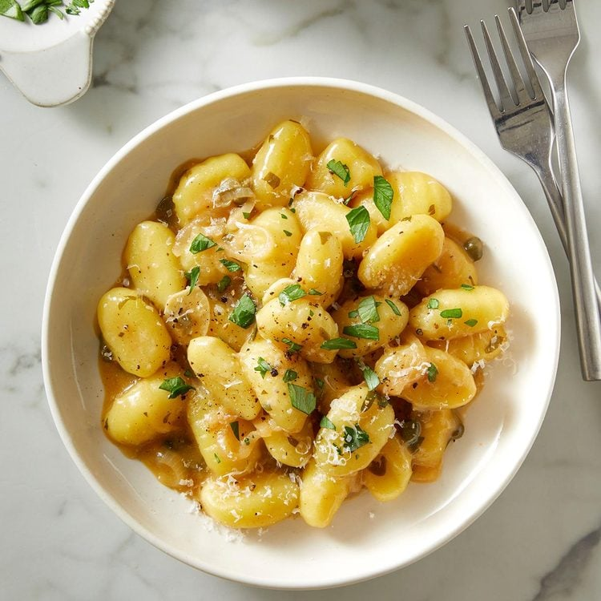

Gnocchi Piccata

Home-made Gnocchi, just like granny used to cook!
When you hear “piccata,” you likely think of the sauce made with butter, lemon, parsley and spices that’s served over chicken or veal. Technically, the term refers to the method used to cook the meat. (It’s pounded thin, dredged in flour and then cooked in the aforementioned lemon sauce). But because most people know the recipe for its sauce, we riffed on it and decided to make a vegetarian version of chicken piccata that replaces the chicken with pillowy potato gnocchi.
Ingredients
- Butter
- Shallot
- Garlic
- Capers
- Vegetable Broth
- White Wine
- Lemon Juice
- Parmesan
- Fresh parsley
- Gnocchi
Hot to make Gnocchi Piccata
Make the sauce
- In a small skillet, melt 2 tablespoons of butter over medium heat. Add the shallot and saute it until it’s golden, about four to six minutes.
- Add the capers and garlic and saute them until they’re fragrant, about 30 to 60 seconds. Stir in the vegetable broth and white wine and reduce the heat to low. Simmer the sauce until it’s slightly reduced, five to seven minutes.
- Remove the skillet from the heat and stir in the lemon juice, grated Parmesan and fresh parsley. Season it to taste with salt and pepper.
Cook the Gnocchi
- While the sauce is simmering, prepare the gnocchi. In a separate large-sized skillet, melt the remaining 2 tablespoons of butter over medium heat. Add the gnocchi in a single layer and cook them, stirring occasionally, until they’re golden, about four to five minutes.
- Add the lemon-caper sauce and cook it until it’s heated through, about two to three minutes. Garnish the pasta with additional fresh minced parsley and serve it.
Home